시스템 인프라 운영
언리얼 엔진 원격 C++ 개발 환경 구축 (VS Code Remote Tunnels)
엔진과 컴파일러는 32GB 집 PC에서 실행하고, 8GB 태블릿에서는 VS Code Remote Tunnels로 텍스트만 주고받으며 C++ 코드를 작성하고 빌드하는 환경을 구성했습니다.
1. 개요 및 구성
- 집 PC (
main-pc): 6코어 / 32GB, Unreal Engine 5.8.4, Visual Studio Community 2026 (18.12.1), MSVC v143 14.44, Windows SDK 10.0.26100 - 태블릿: Windows / 8GB, 테더링 사용, 집 PC와 다른 네트워크 대역
- 연결: VS Code Remote Tunnels (GitHub 계정 인증, Microsoft 중계 서버 경유)
접속 구성
태블릿 (vscode.dev / VS Code) --https--> Microsoft 터널 중계 <--https-- 집 PC (VS Code 터널 서비스)
└─ UnrealBuildTool → MSVC 14.44 컴파일태블릿은 화면과 입력만 담당하고, 코드·컴파일러·엔진은 모두 집 PC에 있습니다. 포트포워딩이나 VPN이 필요 없습니다.
2. 주요 결정 사항
| 결정 | 이유 |
|---|---|
| WSL 대신 Windows에 직접 설치 | WSL2는 Vulkan GPU 가속이 불안정해 언리얼 에디터 사용이 어려움 |
| 태블릿에는 엔진 미설치 | 8GB RAM으로는 에디터 실행 불가. 엔진은 집 PC에서만 실행 |
| RDP 대신 VS Code Remote Tunnels | 테더링 데이터 절약. 코드 작업은 텍스트만 오감 |
| 화면이 필요할 때만 Moonlight 스트리밍 | 720p · 30fps · 2Mbps로 제한하면 시간당 약 0.9GB로 예측 가능 |
| UE 5.4.4 제거 후 5.8.4 설치 | 5.4는 VS 2026 미지원, 5.8은 VS 2026 정식 지원 |
| MSVC v143 14.44 빌드 도구 추가 | VS 2026 기본 컴파일러(14.50) 외에 언리얼이 검증한 툴체인 확보 |
프로젝트 경로 E:\UE | 기본 경로는 OneDrive 동기화 폴더이고 한글(문서)이 포함되어 빌드 문제 위험 |
| 엔진 설치 옵션 최소화 | 디버그 심볼(53GB)과 다른 플랫폼 제외 → 다운로드 11.6GB, 설치 29.5GB |
3. Visual Studio 2026 설치
집 PC언리얼 C++ 빌드에 필요한 컴파일러와 SDK를 설치합니다.
- 워크로드에서 C++를 사용한 게임 개발을 선택합니다.
- 선택 구성 요소에서 Windows 11 SDK (10.0.26100), Visual Studio Tools for Unreal Engine을 확인합니다. Unreal Engine 설치 관리자는 런처가 있으므로 해제합니다.
- 개별 구성 요소에서
14.44로 검색해 MSVC v143 - VS 2022 C++ x64/x86 빌드 도구 (v14.44-17.14) 하나만 추가합니다. ATL, MFC, Spectre, ARM 항목은 필요 없습니다.


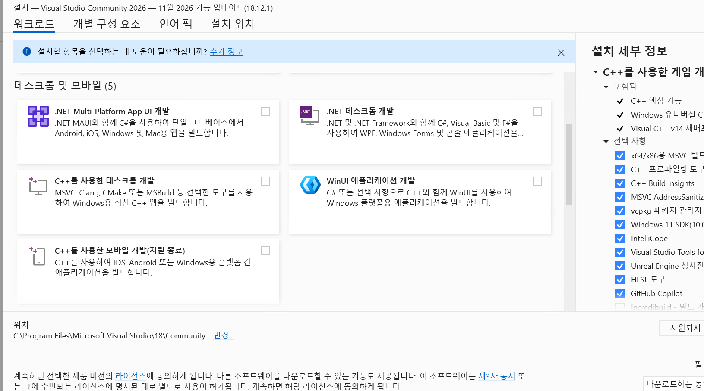
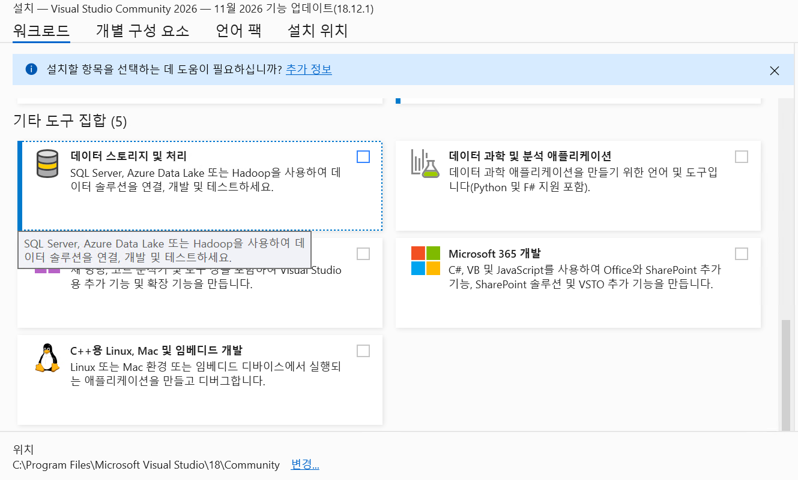
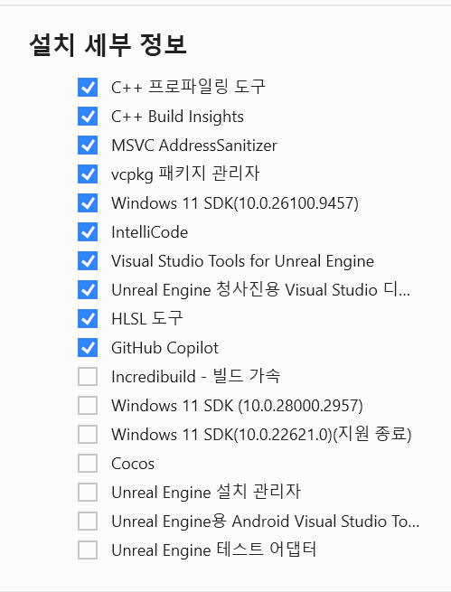
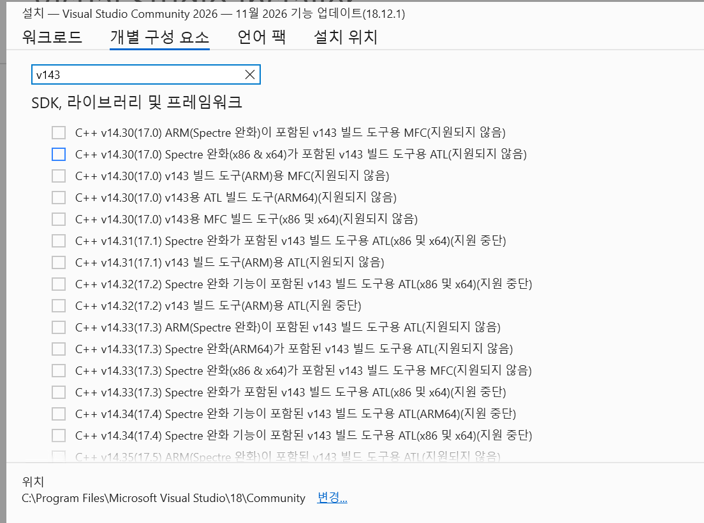
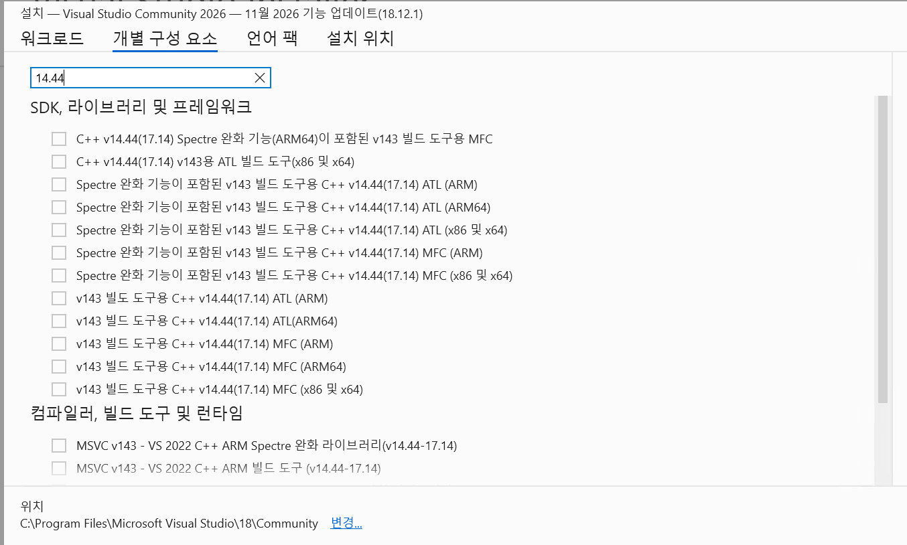

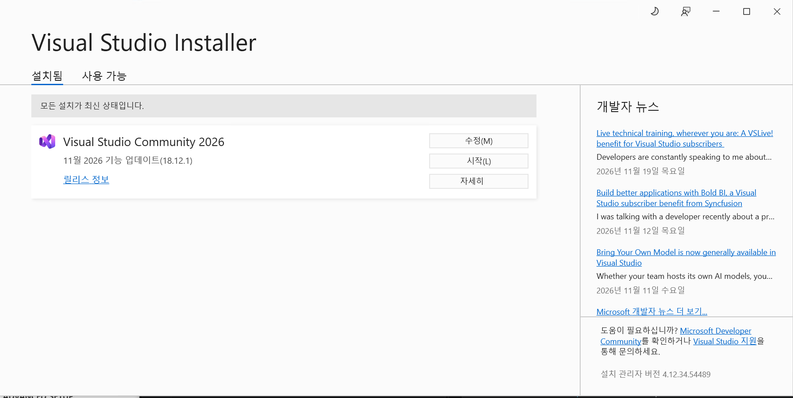
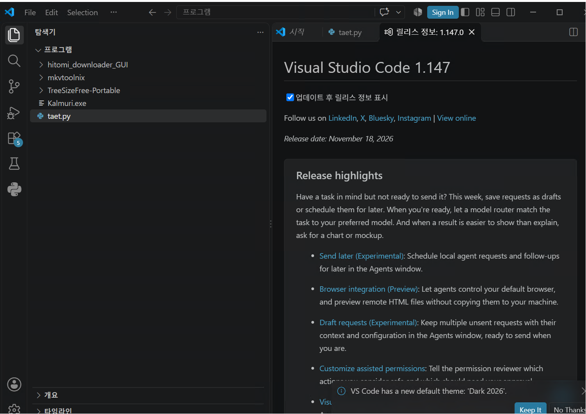
4. Unreal Engine 5.8.4 설치
집 PCEpic Games Launcher에서 엔진 버전을 교체합니다.
- 라이브러리 → 엔진 버전 옆
+→ 버전을 5.8.4로 선택하고 설치합니다. (5.9 Preview는 제외) - 설치가 시작된 뒤 ▼ → 옵션에서 코어 컴포넌트, 템플릿 & 피처 팩, 엔진 소스만 남기고 메타휴먼, 디버깅 심볼, 모든 타깃 플랫폼을 해제합니다.

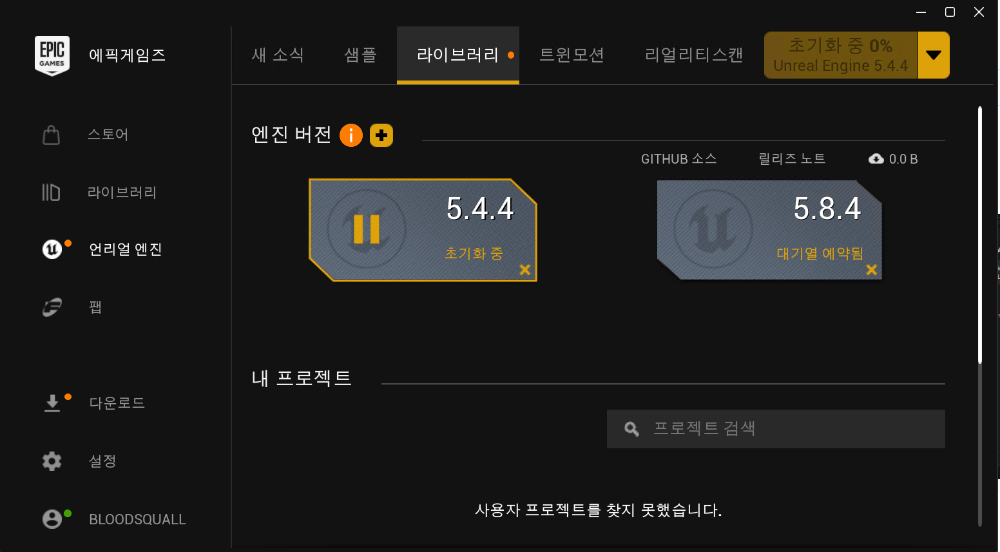
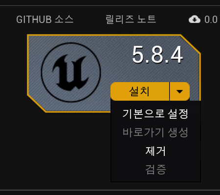

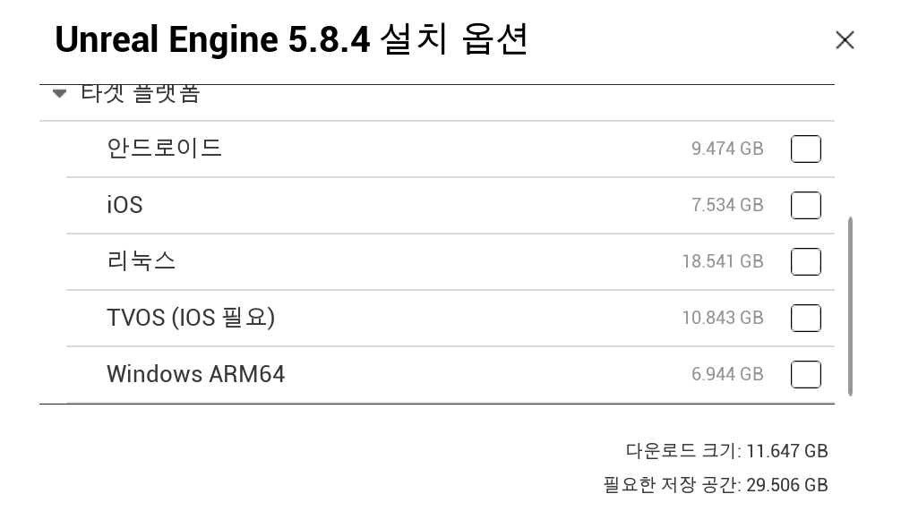

5. C++ 프로젝트 생성
집 PC5.8에서는 템플릿 이름이 일부 바뀌었습니다.
- 홈 패널의 새 프로젝트를 누릅니다. 위쪽 "게임" 버튼은 학습 자료 카테고리입니다.
- 게임 → 기본 템플릿을 선택합니다. 예전 "공백(Blank)"이 "기본"으로 바뀌었고, Intro To Unreal은 블루프린트 전용입니다.
- 프로젝트 디폴트를 C++, 위치
E:\UE, 이름MyProject로 지정합니다.
C:\Users\…\OneDrive\문서\Unreal Projects는 OneDrive가 빌드 임시 파일(수 GB)까지 동기화하고, 한글 경로 때문에 빌드 오류가 날 수 있어 사용하지 않았습니다.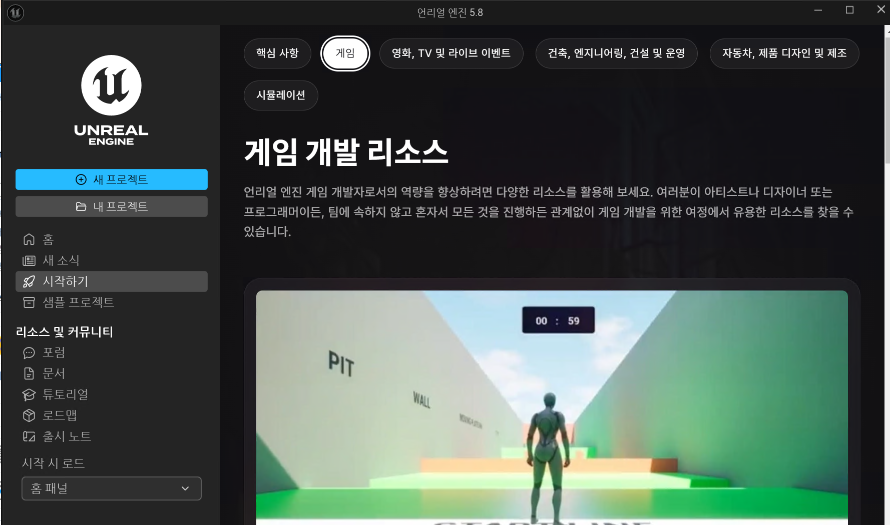

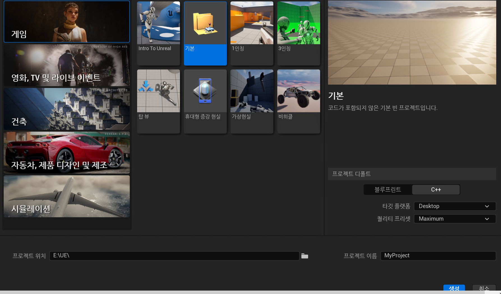
E:\UE\MyProject
6. 언리얼 ↔ VS Code 연동
집 PC언리얼이 VS Code용 설정(IntelliSense, 빌드 작업)을 생성하게 합니다.
- 편집 → 에디터 개인설정 → 일반 → 소스 코드에서 소스 코드 에디터를 Visual Studio Code로 바꾸고 에디터를 재시작합니다.
- VS Code에 C/C++ (Microsoft) 확장을 설치합니다.
- 툴 → Visual Studio Code 프로젝트 생성을 실행합니다.
.vscode폴더와MyProject.code-workspace가 생기면 완료입니다. 이후 언리얼 에디터는 종료합니다. 에디터가 켜져 있으면 DLL이 잠겨 외부 빌드가 실패합니다.


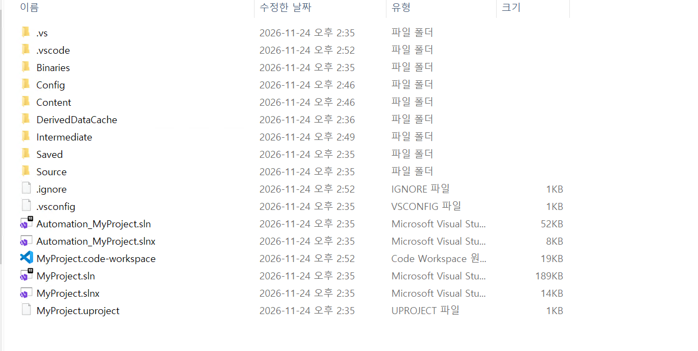
.vscode와 MyProject.code-workspace 생성 확인메뉴가 없을 때: 명령어로 생성
cd E:\UE\MyProject
$UE = "C:\Program Files\Epic Games\UE_5.8"
$PROJ = "$PWD\MyProject.uproject"
$UBT = "$UE\Engine\Binaries\DotNET\UnrealBuildTool\UnrealBuildTool.exe"
& $UBT -projectfiles -project="$PROJ" -game -vscode7. Remote Tunnel 구성
집 PC집 PC를 어디서든 접속 가능한 원격 개발 서버로 만듭니다.
Ctrl+Shift+P→ Remote Tunnels: Turn on Remote Tunnel Access...- Install as a service를 선택합니다. 재부팅하거나 VS Code를 닫아도 터널이 유지됩니다.
- GitHub 계정으로 로그인합니다. 머신 이름은 별도 입력 없이
main-pc로 지정되었습니다. - Windows 설정 → 시스템 → 전원에서 절전 모드 전환을 안 함으로 바꿉니다.
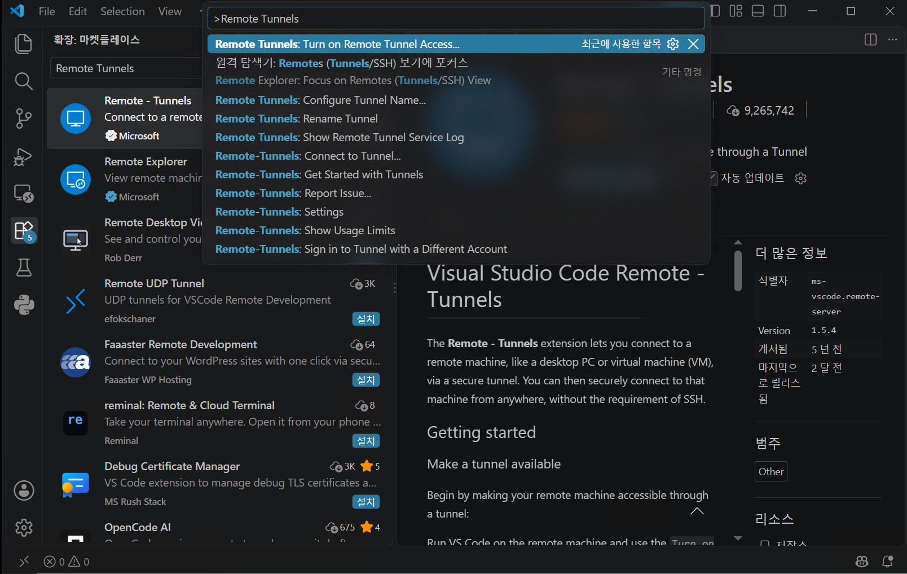
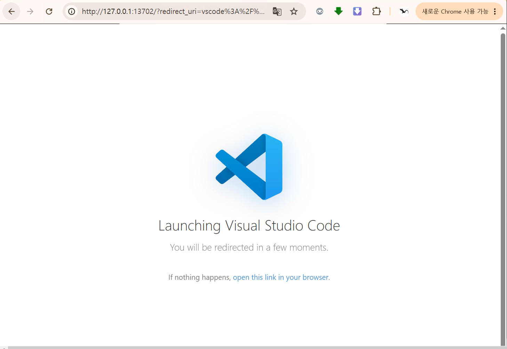

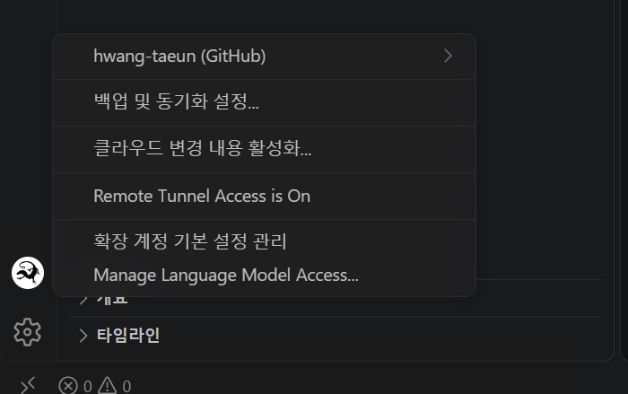

main-pc 확인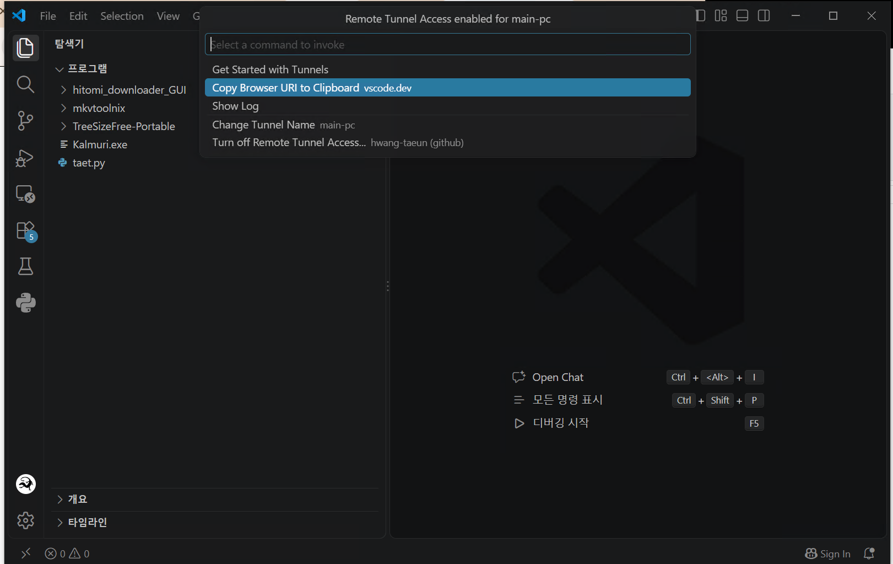
복사한 주소는 vscode.dev/tunnel/<터널 이름>/<열려 있던 폴더> 형식입니다. 경로 부분만 바꾸면 프로젝트로 바로 들어갈 수 있습니다.
https://vscode.dev/tunnel/main-pc/e:/UE/MyProject?vscode-lang=ko8. 태블릿에서 접속
태블릿여기부터는 집 PC를 직접 조작하지 않습니다.
- 브라우저에서 위 주소를 열고 같은 GitHub 계정으로 로그인합니다.
- 작업 영역 열기로 MyProject와 UE5 폴더가 함께 보이는 작업 영역으로 전환합니다.
- 제한 모드를 해제합니다. 엔진 폴더, 프로젝트 폴더, 작업 영역 파일이 신뢰 목록에 등록되면 됩니다.
- 확장 탭에서 C/C++를 main-pc에 설치합니다. 원격 접속에서 C/C++ 같은 작업 영역 확장은 코드가 있는 집 PC 쪽에서 실행되므로, 로컬 설치와 별개로 한 번 더 설치해야 합니다.

main-pc 접속 성공
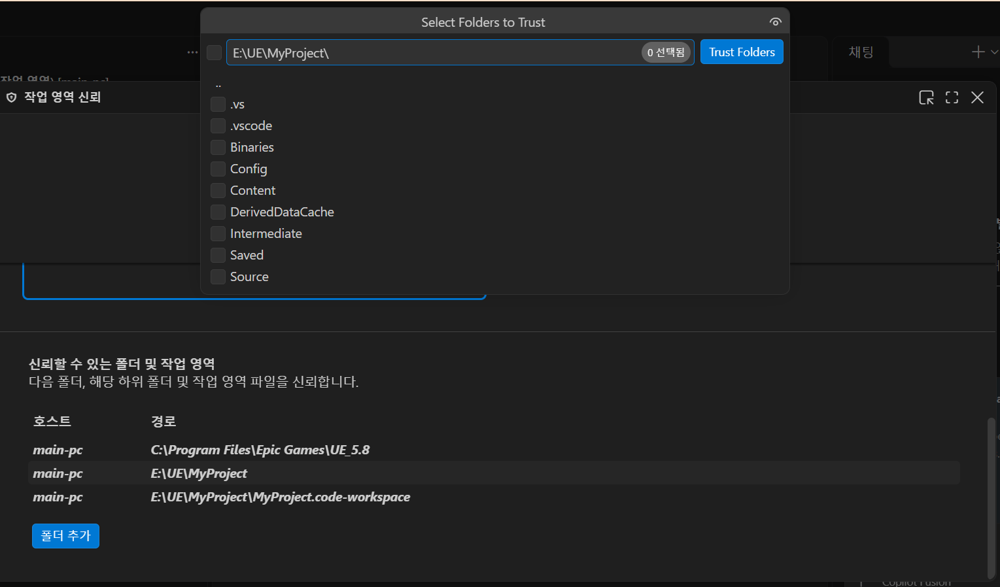

main-pc에 설치9. 원격 빌드
태블릿에서 실행하면 집 PC에서 컴파일됩니다.
빌드 작업 (기본)
Ctrl+Shift+P→ 작업: 기본 빌드 작업 구성 →MyProjectEditor Win64 Development Build를 한 번 지정합니다.- 이후에는 코드 수정 →
Ctrl+S→Ctrl+Shift+B만 반복합니다.
터미널에서 직접 빌드
cd E:\UE\MyProject
$UE = "C:\Program Files\Epic Games\UE_5.8"
$PROJ = "$PWD\MyProject.uproject"
$NAME = "MyProject"
$BUILD = "$UE\Engine\Build\BatchFiles\Build.bat"
& $BUILD "${NAME}Editor" Win64 Development -Project="$PROJ" -WaitMutex
hostname은 Main-PC
Source/MyProject/MyProject.cpp에 테스트 주석 추가실제 컴파일 확인
Using Visual Studio 14.44.35230 toolchain (...\MSVC\14.44.35207) and Windows 10.0.26100.0 SDK
Using Unreal Build Accelerator local executor to run 11 action(s)
[9/11] Compile [x64] MyProject.cpp
[10/11] Link [x64] MyProject.exe
Output binary: E:\UE\MyProject\Binaries\Win64\MyProject.exe
Result: Succeeded
Total execution time: 73.40 seconds태블릿에서 수정한 코드가 집 PC의 MSVC 14.44로 컴파일되는 것을 확인했습니다.
10. 트러블슈팅
파일을 Source 밖에 생성
프로젝트 최상위에 MyProject.cpp를 새로 만들어 수정했습니다. 언리얼은 Source/ 아래 모듈 코드만 빌드하므로, 파일을 삭제하고 Source/MyProject/MyProject.cpp를 수정했습니다.
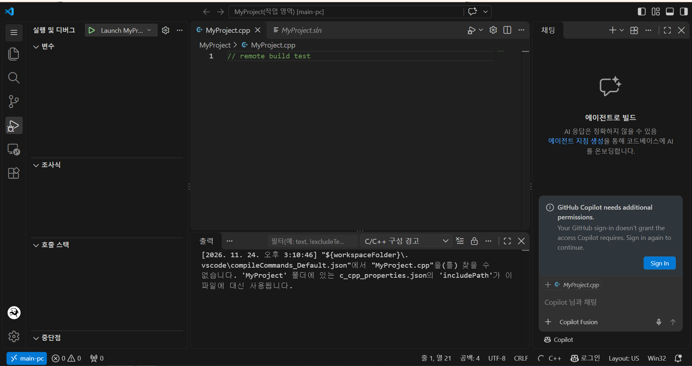
MyProject.cpp로 Source 밖에 생성된 파일" loading="lazy" />MyProject > MyProject.cpp (Source 밖)'cl.exe'은(는) 내부 또는 외부 명령이 아닙니다
Ctrl+Shift+B 목록 맨 위의 C/C++: cl.exe 활성 파일 빌드를 선택해서 발생했습니다. C/C++ 확장이 자동으로 만든 단일 파일 빌드 작업이라 언리얼 프로젝트에는 쓸 수 없습니다. 로그의 깨진 글자는 CP949 인코딩 문제입니다.
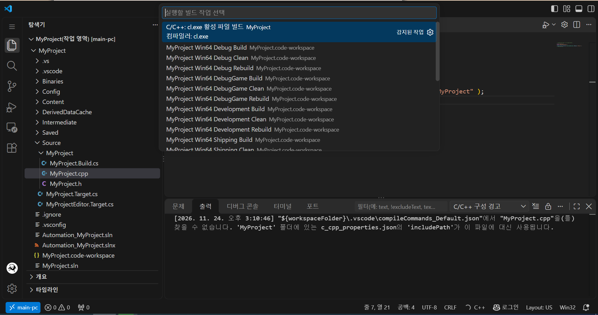

Targets cannot be built in the Debug configuration
MyProject Win64 Debug Rebuild를 선택해서 발생했습니다. 런처로 설치한 엔진은 Debug 구성을 지원하지 않습니다.
| 구성 | 런처 엔진 | 용도 |
|---|---|---|
| Debug | 불가 | 엔진까지 디버깅 (소스 빌드 엔진 전용) |
| DebugGame | 가능 | 내 코드만 디버깅 |
| Development | 가능 | 평소 개발용 |
| Shipping | 가능 | 배포용 |
MyProject(게임 실행 파일)와 MyProjectEditor(에디터용)는 다른 타깃이므로, 에디터에서 쓸 코드는 MyProjectEditor로 빌드합니다.

기타
| 상황 | 해결 |
|---|---|
| UE 5.4에서 컴파일러를 찾지 못함 | 5.4는 VS 2026 미인식 → 5.8 이상 사용 또는 VS 2022 Build Tools 추가 |
| 설치 전 옵션 메뉴가 없음 | 엔진 구성 요소 옵션은 설치를 시작한 뒤 ▼ 메뉴에 표시됨 |
| "VS Code 프로젝트 생성" 메뉴 없음 | 소스 코드 에디터 변경 후 에디터 재시작 필요 |
| 원격 빌드 시 파일 잠금 | 집 PC 언리얼 에디터 종료 |
| C/C++ 구성 경고 (compileCommands 없음) | 첫 빌드 전 경고, 빌드 후 사라짐 |
11. 운영 방식
코드 작업
즐겨찾기로 vscode.dev 접속 → Source/ 코드 수정 → Ctrl+S → Ctrl+Shift+B → Result: Succeeded 확인. 텍스트만 오가므로 테더링 데이터를 거의 쓰지 않습니다.
화면이 필요할 때
블루프린트, 레벨 배치, 뷰포트 확인처럼 화면이 필요할 때만 Moonlight(+ Sunshine, Tailscale)를 비트레이트를 제한해 사용합니다.
| 설정 | 시간당 데이터 |
|---|---|
| 10 Mbps | 약 4.5 GB |
| 5 Mbps | 약 2.2 GB |
| 2 Mbps (720p, 30fps) | 약 0.9 GB |
뷰포트 Realtime 끄기, Use Less CPU when in Background 켜기, 단색 바탕화면을 쓰면 화면 변화가 줄어 실제 사용량은 더 적습니다.
체크리스트
- 집 PC 절전 모드 "안 함"
- 원격 빌드 시 집 PC 언리얼 에디터 종료
- 기본 빌드 작업은
MyProjectEditor Win64 Development Build - 코드는 항상
Source/안에서 수정